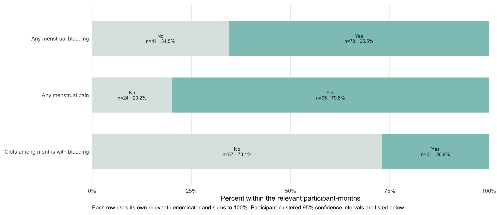
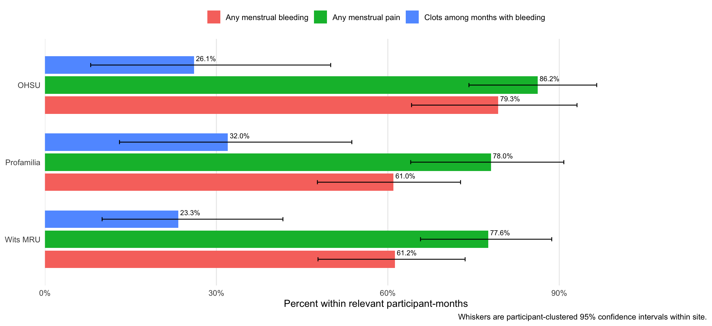
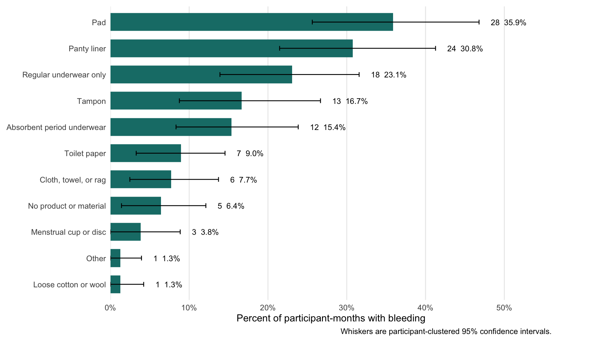
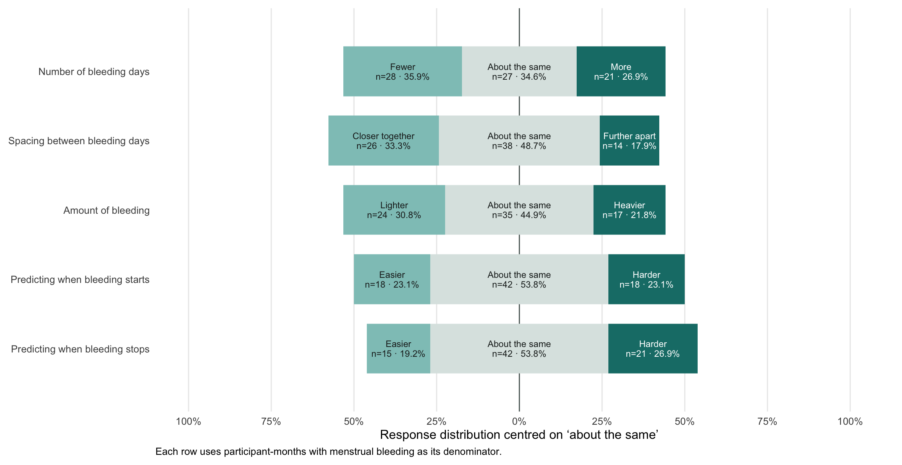
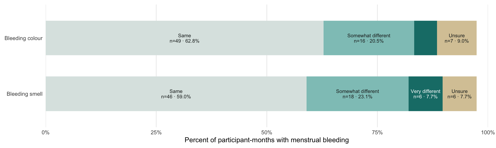
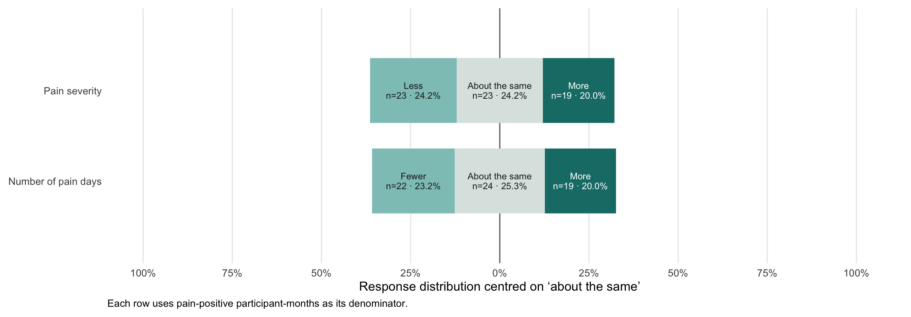
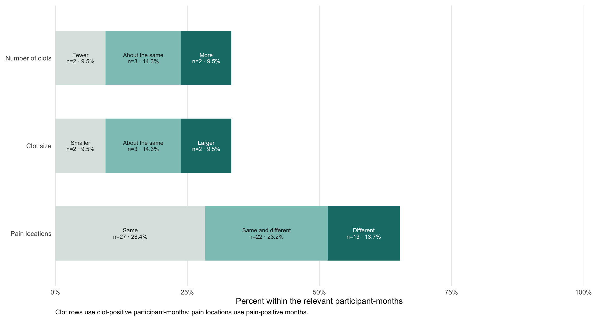
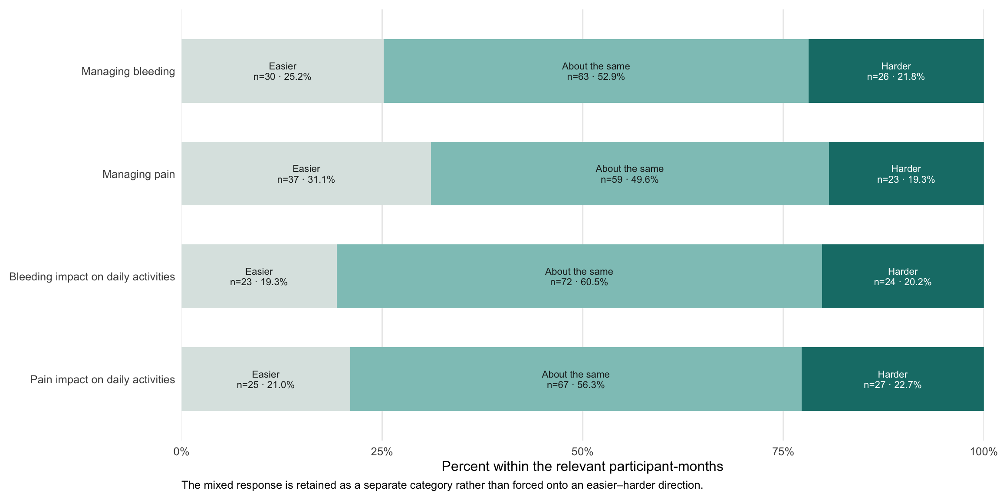
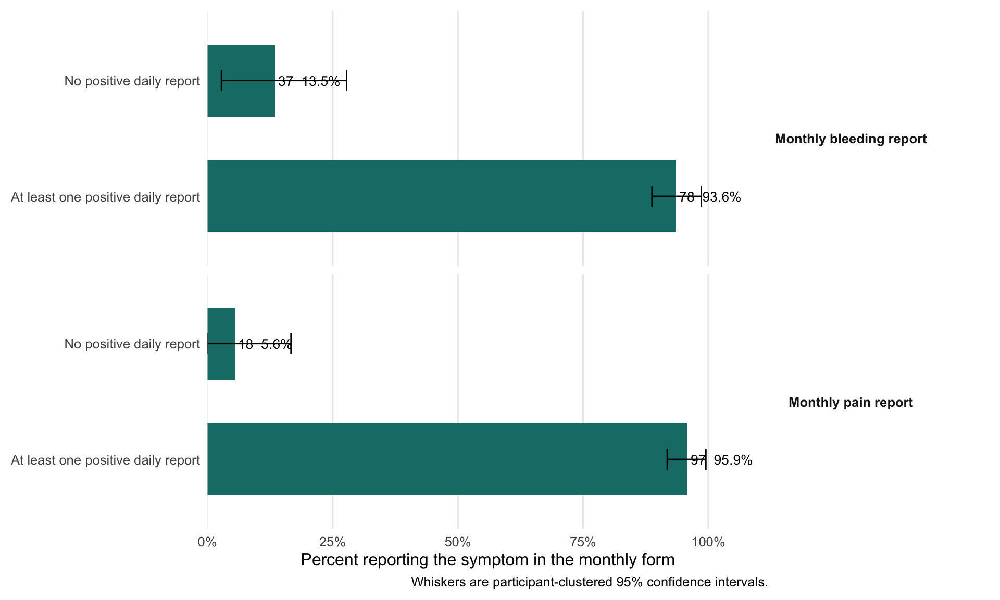
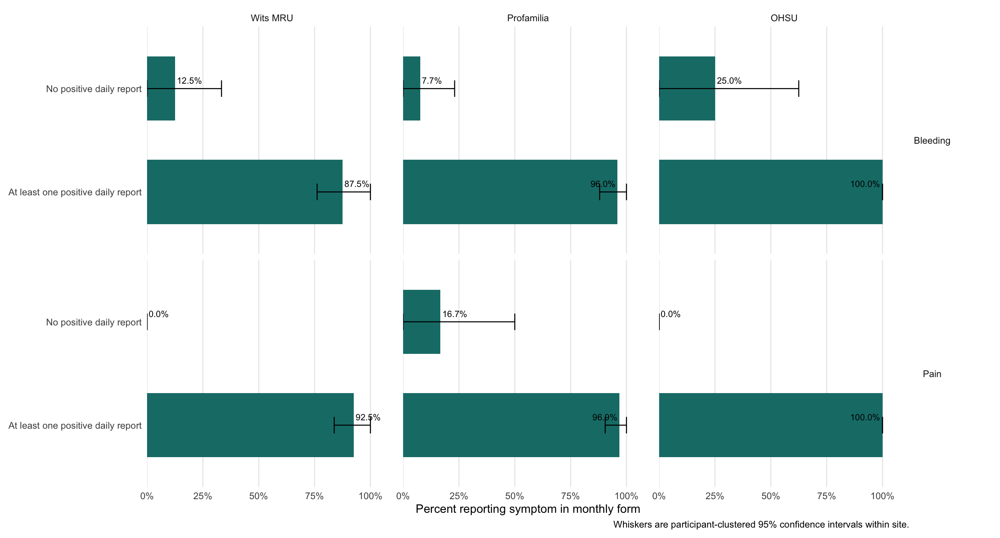

7 Monthly bleeding and pain
Monthly ePRO results and daily–monthly consistency
7.1 Monthly questionnaire overview
The monthly form summarises the preceding month and asks about changes, predictability, management, and impacts. Its unit of analysis is a participant-month.
What. This section summarises the participant’s overall experience of the preceding month.
How. Each submitted participant-month is one observation. A participant contributing six monthly forms contributes six observations, and the confidence intervals resample those records together as one participant cluster.
Why. Monthly questions capture perceived change, predictability, management burden, and impact—concepts that are difficult to reconstruct from isolated daily answers alone.
7.2 Monthly occurrence
What it shows. The proportion of participant-months reporting any bleeding, pain, or clots. Clots use only months in which bleeding was reported.
Why it matters. This is a high-level monthly prevalence view and a useful bridge between detailed daily reporting and participants’ retrospective monthly experience.
| Question | Response | Participant-months | Estimate (95% CI) |
|---|---|---|---|
| Any menstrual bleeding | No | 41 | 34.5% (26.5% to 43.1%) |
| Any menstrual bleeding | Yes | 78 | 65.5% (56.9% to 73.5%) |
| Any menstrual pain | No | 24 | 20.2% (13.4% to 27.8%) |
| Any menstrual pain | Yes | 95 | 79.8% (72.2% to 86.6%) |
| Clots among months with bleeding | No | 57 | 73.1% (62.2% to 82.8%) |
| Clots among months with bleeding | Yes | 21 | 26.9% (17.2% to 37.8%) |
7.2.1 Monthly symptom occurrence by study site
What it shows. This selected site view compares monthly reports of bleeding, pain, and—among bleeding-positive months—clots.
How it is calculated. Each bar uses participant-months from one site and the relevant question-specific denominator. Confidence intervals keep repeated monthly reports from the same participant together.
Why it helps. It reveals whether the pooled monthly result is broadly shared across sites or dominated by one site. Differences may reflect participant mix, follow-up timing, reporting practice, or chance.

7.3 Bleeding products and materials
Respondents could select up to two products or materials. The denominator is participant-months with bleeding, so percentages may sum to more than 100%.
How to read it. Each bar is the percentage of bleeding-positive participant-months selecting that product; products are not mutually exclusive. The result describes management choices, not the amount of bleeding by itself.

7.4 Monthly bleeding changes
What it shows. The diverging chart places “about the same” at the centre and displays the two directional responses on either side. Every measure therefore uses one common horizontal scale.
Why it matters. The layout makes internal comparators visible: for example, the team can compare the balance of lighter versus heavier bleeding and easier versus harder predictability without reading separate charts.

Colour and smell responses describe degree of difference rather than a left-to-right direction, so they are shown separately as complete compositions.

7.4.1 Monthly bleeding change estimates with 95% confidence intervals
The chart segments above show complete response compositions. Drawing an error bar over every stacked segment would obscure the comparison, so the participant-clustered intervals are provided numerically here.
| Measure | Response | Participant-months | Estimate (95% CI) |
|---|---|---|---|
| Amount of bleeding | Lighter | 24 | 30.8% (20.9% to 42.1%) |
| Amount of bleeding | About the same | 35 | 44.9% (34.7% to 55.6%) |
| Amount of bleeding | Heavier | 17 | 21.8% (14.3% to 30.6%) |
| Bleeding colour | Same | 49 | 62.8% (52.6% to 73.3%) |
| Bleeding colour | Somewhat different | 16 | 20.5% (12.2% to 30.5%) |
| Bleeding colour | Very different | 4 | 5.1% (1.3% to 10.0%) |
| Bleeding colour | Unsure | 7 | 9.0% (2.7% to 15.1%) |
| Bleeding smell | Same | 46 | 59.0% (47.3% to 69.4%) |
| Bleeding smell | Somewhat different | 18 | 23.1% (14.1% to 32.9%) |
| Bleeding smell | Very different | 6 | 7.7% (2.5% to 14.9%) |
| Bleeding smell | Unsure | 6 | 7.7% (2.5% to 13.9%) |
| Number of bleeding days | Fewer | 28 | 35.9% (24.8% to 47.9%) |
| Number of bleeding days | About the same | 27 | 34.6% (24.1% to 45.9%) |
| Number of bleeding days | More | 21 | 26.9% (15.9% to 37.5%) |
| Predicting when bleeding starts | Easier | 18 | 23.1% (14.8% to 32.5%) |
| Predicting when bleeding starts | About the same | 42 | 53.8% (42.1% to 64.9%) |
| Predicting when bleeding starts | Harder | 18 | 23.1% (14.3% to 33.3%) |
| Predicting when bleeding stops | Easier | 15 | 19.2% (11.0% to 27.7%) |
| Predicting when bleeding stops | About the same | 42 | 53.8% (43.6% to 63.3%) |
| Predicting when bleeding stops | Harder | 21 | 26.9% (18.1% to 35.9%) |
| Spacing between bleeding days | Closer together | 26 | 33.3% (23.0% to 45.3%) |
| Spacing between bleeding days | About the same | 38 | 48.7% (37.5% to 59.7%) |
| Spacing between bleeding days | Further apart | 14 | 17.9% (9.0% to 28.4%) |
7.5 Monthly clot and pain changes
What it shows. These questions describe perceived change relative to the participant’s prior experience. Each question uses only participant-months for which the underlying symptom was relevant.
Why it matters. Direction of change can be more informative for acceptability than simple symptom presence, especially when baseline experiences differ substantially between participants.

Clot questions include an “unsure” response, and the pain-location question describes type of difference rather than a single direction. They are therefore shown as complete 100% compositions.

| Measure | Response | Participant-months | Estimate (95% CI) |
|---|---|---|---|
| Clot size | Smaller | 2 | 9.5% (0.0% to 27.3%) |
| Clot size | About the same | 3 | 14.3% (0.0% to 31.6%) |
| Clot size | Larger | 2 | 9.5% (0.0% to 26.3%) |
| Clot size | Unsure | 0 | 0.0% (0.0% to 0.0%) |
| Number of clots | Fewer | 2 | 9.5% (0.0% to 25.0%) |
| Number of clots | About the same | 3 | 14.3% (0.0% to 36.4%) |
| Number of clots | More | 2 | 9.5% (0.0% to 25.0%) |
| Number of clots | Unsure | 0 | 0.0% (0.0% to 0.0%) |
| Number of pain days | Fewer | 22 | 23.2% (14.1% to 32.9%) |
| Number of pain days | About the same | 24 | 25.3% (16.3% to 34.8%) |
| Number of pain days | More | 19 | 20.0% (11.2% to 29.4%) |
| Pain locations | Same | 27 | 28.4% (19.6% to 37.2%) |
| Pain locations | Same and different | 22 | 23.2% (14.7% to 31.3%) |
| Pain locations | Different | 13 | 13.7% (6.6% to 21.4%) |
| Pain severity | Less | 23 | 24.2% (15.5% to 33.5%) |
| Pain severity | About the same | 23 | 24.2% (15.6% to 35.5%) |
| Pain severity | More | 19 | 20.0% (10.7% to 29.0%) |
7.6 Monthly management and activity impacts
What it shows. These responses describe whether symptom management and daily activities felt easier, unchanged, harder, or mixed.
Why it matters. A programme can change symptoms without changing burden in the same direction. These measures connect clinical experiences to practical acceptability.

| Measure | Response | Participant-months | Estimate (95% CI) |
|---|---|---|---|
| Bleeding impact on daily activities | Easier | 23 | 19.3% (12.5% to 27.7%) |
| Bleeding impact on daily activities | About the same | 72 | 60.5% (51.2% to 68.4%) |
| Bleeding impact on daily activities | Harder | 24 | 20.2% (13.4% to 27.5%) |
| Bleeding impact on daily activities | Mixed: easier and harder | 0 | 0.0% (0.0% to 0.0%) |
| Managing bleeding | Easier | 30 | 25.2% (18.4% to 32.9%) |
| Managing bleeding | About the same | 63 | 52.9% (43.7% to 61.4%) |
| Managing bleeding | Harder | 26 | 21.8% (15.0% to 29.0%) |
| Managing bleeding | Mixed: easier and harder | 0 | 0.0% (0.0% to 0.0%) |
| Managing pain | Easier | 37 | 31.1% (22.5% to 39.1%) |
| Managing pain | About the same | 59 | 49.6% (40.4% to 59.6%) |
| Managing pain | Harder | 23 | 19.3% (13.1% to 26.1%) |
| Managing pain | Mixed: easier and harder | 0 | 0.0% (0.0% to 0.0%) |
| Pain impact on daily activities | Easier | 25 | 21.0% (13.9% to 28.0%) |
| Pain impact on daily activities | About the same | 67 | 56.3% (47.2% to 64.9%) |
| Pain impact on daily activities | Harder | 27 | 22.7% (15.0% to 29.9%) |
| Pain impact on daily activities | Mixed: easier and harder | 0 | 0.0% (0.0% to 0.0%) |
7.7 Daily–monthly consistency
This descriptive comparison links each monthly submission to that participant’s daily submissions in the same calendar month.
What it shows. Monthly symptom reporting is compared between participant-months with at least one corresponding positive daily report and those with no positive daily report.
Why it matters. Strong agreement supports the idea that daily and monthly instruments are capturing related experiences. Disagreement is not automatically an error: monthly recall, missed daily forms, question wording, and different reference periods can all produce genuine differences.

7.7.1 Daily–monthly consistency by study site
What it shows. The same daily–monthly comparison is repeated within each study site.
How it is calculated. Monthly reports are linked to daily forms using participant ID and calendar month, then analysed separately by site. The bars show monthly symptom reporting conditional on whether any positive daily report was observed in that month.
Why it helps. Site-specific disagreement can identify differences in completion, interpretation, translation, or implementation that would be hidden in the pooled agreement statistic.

| Symptom | Linked participant-months | Daily/monthly agreement |
|---|---|---|
| Bleeding | 115 | 91.3% |
| Pain | 115 | 95.7% |